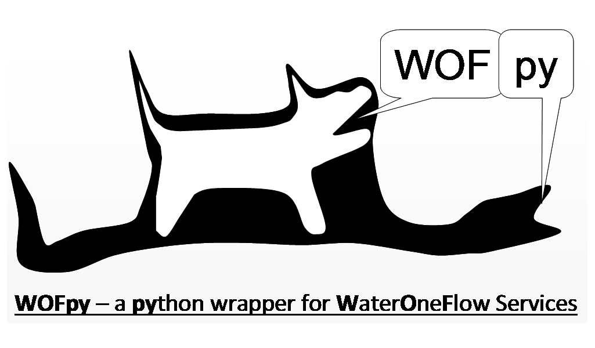

Welcome to WOFpy!¶
What is WOFpy?¶
WOFpy stands for Water One Flow in Python. It is designed to produce WaterML web services from a variety of back-end database formats, e.g. SQLite, Microsoft SQL server, PostgreSQL, etc. It is a key part of the Python services stack developed by the Texas Water Development Board for ‘Water Data for Texas’ - a unified hydrological information system that shares environmental data for the state of Texas.
How do I get started?¶
What is inside WOFpy?¶
How do I use WOFpy to publish my data?¶
Indices and tables¶
Developers¶